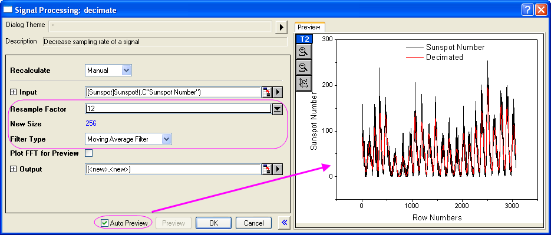
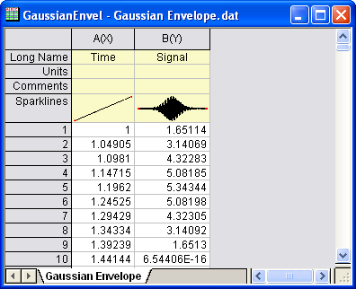

Dezimierung und Signalumhüllung
Decimation-and-Signal-Envelope
Zusammenfassung
Die Dezimierung wird verwendet, um die Größe der Signalfolge zu reduzieren und alle N Stichproben zu einer zusammenzufassen.
Die Umhüllungserkennung fügt eine Umhüllungskurve zu dem Eingabesignal hinzu. Origins Hilfsmittel der Signalumhüllung berechnet eine Umhüllung und zeichnet eine obere, eine untere oder beide Umhüllungen.
Was Sie lernen werden
Dieses Tutorial zeigt Ihnen, wie Sie:
- ein Signal dezimieren, um die Größe der Eingangssignalsequenz zu reduzieren.
- eine Umhüllungserkennung durchführen, um die Umhüllungskurve hinzuzufügen.
Dezimierung
In diesem Tutorial wird eine Dezimierung für die Daten der Anzahl von Sonnenflecken durchgeführt. Messungen der Anzahl der Sonnenflecken wurden jeden Monat für mehr als 200 Jahre erfasst. Sie verwenden die Dezimierung, um den Datensatz auf eine Sonnenfleckenanzahl für jedes Jahr zu reduzieren.
- Öffnen Sie eine neue Arbeitsmappe und importieren Sie die Datei aus dem <Origin-Verzeichnis>\Samples\Signal Processing\Sunspot.dat.
- Markieren Sie Spalte A. Klicken Sie mit der rechten Maustaste auf die Spalte und wählen Sie Setzen als: Als Y setzen, um die Diagrammzuordnung dieser Spalte auf Y festzulegen. Dies stellt sicher, dass die Anzahl der Sonnenflecken nicht mit Spalte A als X verbunden ist. Der Grund hierfür ist, dass es für die Dezimierung erforderlich ist, eine streng monotonische X-Spalte zu haben.
- Markieren Sie Spalte C und wählen Sie im Menü Analyse: Signalverarbeitung: Dezimierung. Der Dialog Dezimierung: decimate wird geöffnet.
- Setzen Sie in dem Dialog den Neuabtastfaktor auf 12. Setzen Sie den Filtertyp auf Filter des gleitenden Durchschnitts. Um das Ergebnis im rechten Bedienfeld anzuzeigen, aktivieren Sie das Kontrollkästchen Automatische Vorschau.
- 
- Klicken Sie auf OK, um das Ergebnis auszugeben.
- Markieren Sie im Arbeitsblatt Spalte D (die aus dem Ergebnis erzeugte X-Spalte), klicken Sie mit der rechten Maustaste und wählen Sie Einfügen im Kontextmenü, um eine neue Spalte einzufügen. Klicken Sie erneut mit der rechten Maustaste und wählen Sie Setzen als: Als Y setzen, um die Zuordnung der Spalte in Y zu ändern.
- Markieren Sie die neu eingefügte Spalte und klicken Sie mit der rechten Maustaste auf sie, um Setzen als: Als X setzen im Kontextmenü zu wählen. Die Spalte wird dann eine X-Spalte. Klicken Sie mit der rechten Maustaste erneut auf die Spalte und wählen Sie Spaltenwerte errechnen, um den Dialog Werte setzen aufzurufen, und geben Sie
") in das Textfeld ein und klicken Sie auf OK.
in das Textfeld ein und klicken Sie auf OK.
- Markieren Sie Spalte A, klicken Sie mit der rechten Maustaste, wählen Sie Setzen als: Als X setzen im Kontextmenü aus und legen Sie die Spaltenzuordnung auf X fest. Am Ende sollte das Arbeitsblatt folgendermaßen aussehen.
- Drücken Sie die Strg-Taste und markieren Sie Spalte C und E. Wählen Sie im Menü Zeichnen: Einfache 2D: 2-fach Vertikal, um ein Diagramm zu erstellen. Beachten Sie, dass die dezimierte Linie viel glatter aussieht, wie das Bild unten zeigt.
Signalumhüllung
- Öffnen Sie eine neue Arbeitsmappe.
- Wählen Sie im Menü Daten: Aus Datei importieren: Einzelnes ASCII, um die Daten <Origin-Verzeichnis>\Samples\Signal Processing\Gaussian Envelope.dat zu importieren.
- 
- Markieren Sie Spalte B und wählen Sie im Menü Zeichnen: Einfache 2D: Liniendiagramm, um ein Liniendiagramm zu erstellen.
- Wählen Sie, wenn dieses Diagramm aktiv ist, im Menü Analyse: Signalverarbeitung: Umhüllung. Der Dialog Umhüllung: envelope wird geöffnet.
- Setzen Sie im Dialog den Umhüllungstyp auf Beide Hüllkurven und die Glättungspunkte auf 10. Aktivieren Sie die Automatische Vorschau, um das Ergebnis im rechten Bedienfeld in der Vorschau anzuzeigen.
- Klicken Sie auf OK, um das Diagramm mit der oberen und unteren Umhüllungskurve zu erstellen.